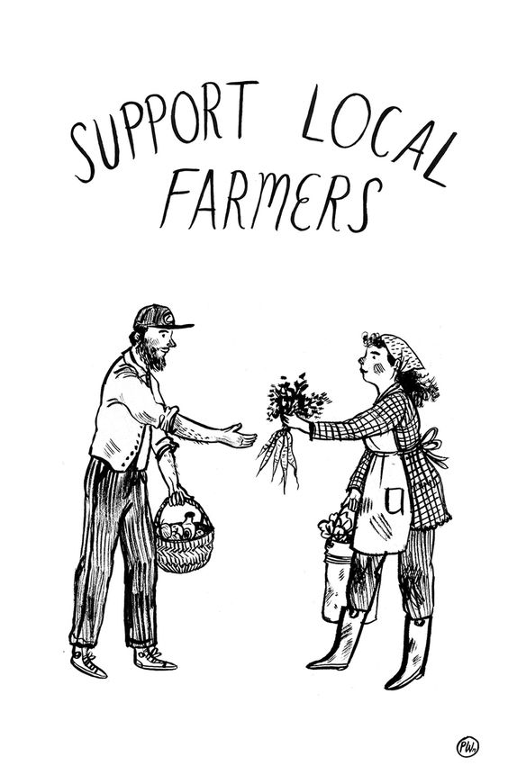

Republica Moldova este o țară agrară, iar 27, 4% din populația activă sunt întrenați în sectorul agrar. Trebuie să încurajăm producătorii de afine, zmeură,struguri, prune, miere de albini, lactate ș.a. să supraviețuiască! De asemenea producătorii autohtoni, de cele mai multe ori, comercializează produse bio, fără conservanți sau alte adaosuri, ceea ce reprezintă un argument destul de bun pentru vizitarea piețelor în schimbul supermarketurilor.
Producatorii mici pot supraviețui doar datorită consumului intern! Iar tu poți fi erou procurând de la ei!
De aceea vă invit să accesați magazinul online, unde puteți procura produse autohtone: